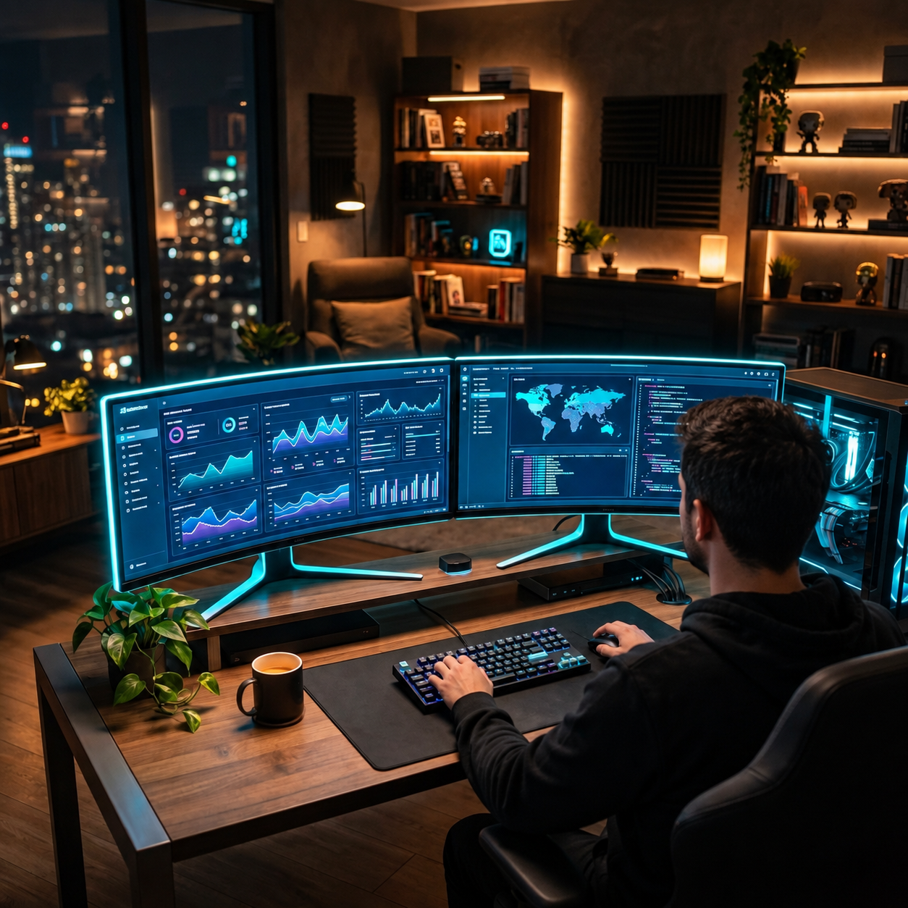

МЕСТО СИЛЫБлиже к океану.
ВАШЕ МЕСТО ДЛЯ ВДОХНОВЕНИЯ
У каждой мечты
должно быть
своё место.
Соберите то, что вас зажигает, на одной доске. Чтобы чаще вспоминать, куда хочется идти — и зачем.
Без подписки. Без рекламы. Без регистрации.
моя жизнь, которую я выбираю

МОЁ ДЕЛОСоздавать то,
Создавать то,
что люблю.
Больше жизни.
Больше моего.
Всё начинается с образа
Не ещё один список «надо».
Напоминание о вашем «хочу».
В вашем ритме.
01 / СОБЕРИТЕ СВОЁ
Мечта становится ближе,
когда её видно.
Путешествие, любимое дело, уютный дом или время для себя. Здесь есть место всему, что важно именно вам.
Найдите свой образ
Ищите фотографии в приложении или добавляйте свои. Собирайте доску из того, что откликается.
Устройте всё по-своему
Аккуратная сетка или свободный холст. Светлая «Бумага» или тёмный «Космос». Ваше настроение — ваш выбор.
Пусть мечта будет рядом
Сохраните доску в PNG для экрана или распечатайте плакат А2. С ненавязчивой подписью Kseles-DreamBoards.
Моя жизнь, мои ориентиры
ПУТЕШЕСТВИЯ
Просыпаться с видом на океан
Однажды это будет моё обычное утро.
ЛЮБИМОЕ ДЕЛО
Дать жизнь своей идее
Первый маленький шаг уже имеет значение.
Оставлять
время
для себя.
Не когда-нибудь.
В этой жизни.
Пример оформления — ваша доска будет о вас.
02 / ВЕРНИТЕСЬ К СЕБЕ
Вдох.
Выдох.
Вспомните свою мечту.
В режиме манифестации образы вашей доски сменяют друг друга, а мягкое движение символа помогает следовать ритму дыхания.
Гармоничный звук можно включить по желанию. Несколько спокойных минут — только для вас.
Открыть приложение03 / НАЧНИТЕ С МАЛЕНЬКОГО
Не нужно знать весь путь.
Достаточно первого образа.
Назовите мечту
Что вам хочется привнести в свою жизнь? Начните с одной цели.
Добавьте фотографию
Пусть она вызывает то самое чувство: «Да, я хочу именно так».
Возвращайтесь к ней
На доске, в дыхательной практике или на плакате рядом с вами.
ВАША МЕЧТА УЖЕ МОЖЕТ БЫТЬ ЗДЕСЬ
Оставьте место
для своего «хочу».
Без подписки и рекламы.
Только для вдохновения своей мечтой.
Всегда под рукой
Откройте приложение кнопкой «Открыть бесплатно», затем добавьте его на устройство:
Android
В Chrome откройте меню ⋮ → «Добавить на главный экран» → «Установить». Название команды может немного отличаться.
iPhone / iPad
В Safari откройте меню «Поделиться» → «На экран “Домой”». Если есть переключатель «Открывать как веб-приложение», включите его и нажмите «Добавить».
Компьютер
Откройте приложение в Chrome или Edge и нажмите значок установки в адресной строке, если он доступен. Можно пользоваться и в обычной вкладке.
ЕЩЁ ПАРА ВОПРОСОВ
Всё просто.
И по-честному.
Это действительно бесплатно?
Да. Создание доски, поиск фотографий, дыхательная практика и экспорт PNG доступны без подписки и рекламы.
Нужно создавать аккаунт?
Нет. Открывайте приложение и начинайте. Доска сохраняется в браузере на вашем устройстве. Чтобы перенести её или сохранить отдельную копию, используйте резервный экспорт в приложении.
Можно пользоваться без интернета?
После первой загрузки основные функции доступны офлайн. Для поиска и загрузки новых сетевых фотографий нужен интернет.
Можно напечатать свою доску?
Да, экспортируйте PNG в формате А2 с плотностью 150 или 300 dpi. Для 300 dpi удобнее компьютер. Качество фотографий зависит от исходных изображений.